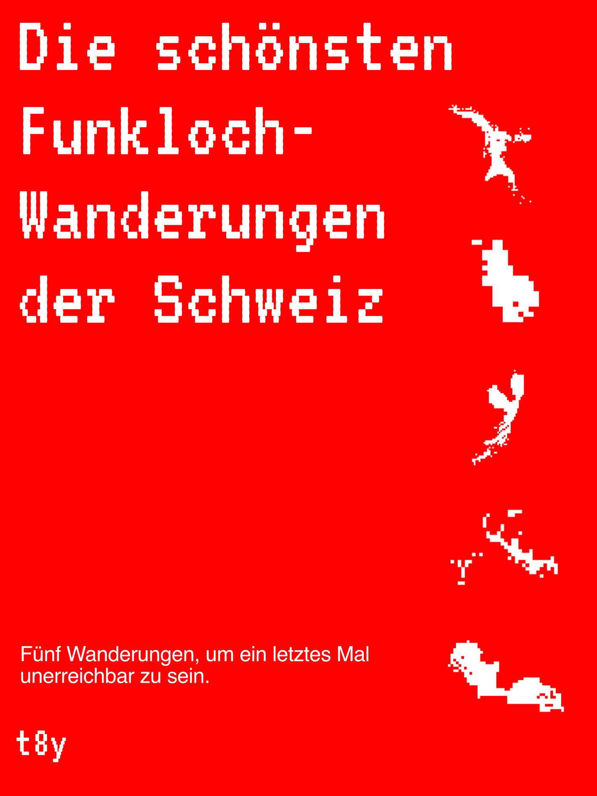

Funkloch guidepost

Cover of the hiking map
Funklöcher is an artistic exploration and homage to the last places where the internet ends and the vibration in your pocket is definitely just an illusion. Follow our trails and listen to the digital silence.
In Switzerland, signal free zones are already a rarity, unlike in many other countries. Ninety-eight percent of Switzerland is covered by mobile networks, and even the last remaining dead zones will soon disappear. Swiss mobile providers are planning to integrate satellite technology to offer ubiquitous internet access. At the same time, many people struggle to control their internet usage and find it difficult to disconnect from the network for a while.
After visiting different signal free zones of Switzerland and placing signposts on these hikings, we are launching a hiking map to be unreachable one last time. To celebrate the publication, we’re organizing a vernissage at the wonderful Travel Book Shop in Zurich. Join us for an evening exploring dead zones as disappearing geographical places, the impact of constant connectivity, and the rise of satellite networks in Switzerland.
After April 9, the hiking map will also be available in our shop.
Funkloch guidepost

Cover of the hiking map